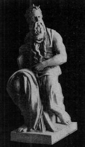

| Editor-in-Chief Henry Hurwitz | Associate Editor I. Leo Sharfman | Managing Editor H. Askowith | Business Manager B. S. Pouzzner |
| Board of Consulting Editors | ||
| Dr. Cyrus Adler Louis D. Brandeis Dr. Lee K. Frankel Prof. Felix Frankfurter Prof. Israel Friedlaender Prof. Richard Gottheil Dr. Max Heller Dr. Joseph Jacobs | Dr. Kaufman Kohler Justice Irving Lehman Judge Julian W. Mack Dr. J. L. Magnes Prof. Max L. Margolis Dr. H. Pereira Mendes Dr. Martin A. Meyer Dr. David Philipson | Dr. Solomon Schechter Hon. Oscar S. Straus Samuel Strauss Judge Mayer Sulzberger Miss Henrietta Szold Felix M. Warburg Dr. Stephen S. Wise |
| THE POTENCY OF THE JEWISH RACE | Charles W. Eliot | 141 |
| ISRAEL AND MEDICINE | Sir William Osler | 145 |
| THE WAR FROM A JEWISH STANDPOINT | Richard Gottheil | 150 |
| O SWEET ANEMONES: A Song | Jessie E. Sampler | 158 |
| "PATHS OF PLEASANTNESS" | David Werner Amram | 159 |
| THE JEWISH GENIUS IN LITERATURE | Edward Chauncey Baldwin | 164 |
| JEWISH WORTHIES: JOCHANAN BEN ZAKKAI | Abraham M. Simon | 173 |
| ZIONISM: A MENORAH PRIZE ESSAY | Marvin M. Lowenthal | 179 |
| FROM COLLEGE AND UNIVERSITY: Activities of Menorah Societies | 194 | |
| NOTES of The Intercollegiate Menorah Association | 200 | |
|  | Classic Casts of
FOR HOME, SCHOOL, LIBRARY |
| 1279 | 3 ft. 1 in. | $25.00 |
| 1279A | 2 ft. | 12.00 |
| 1279B | 1 ft. 7 in. | 6.00 |
KOHUT SCHOOL | FOR BOYS |
| A L L D A Y IN THE C O U N T R Y | Unexcelled Advantages of Refined home Physical training, and outdoor sports under rigid supervision Resident Masters and House-mother Individualized attention in the class-room Gardening, Manual Training Bible Study and Elementary Hebrew For Booklet, Address at School HARRY J. KUGEL, Principal |
(Signed) Benjamin S. Pouzzner. Sworn to and subscribed before me this 21st day of April, 1915. (Signed) Margaret M. Murphy. (My commission expires March 30, 1916.)
JEWISH CLASSICS. Three volumes I. Sufferings of the Jews in the Middle Ages, by L. Zunz; II. Hebrew Tales, by H. Hurwitz; III. Sayings of the Jewish Fathers (Pirke Aboth) by J.I. Gorfinkle. Per volume | .50 |
JEWISH QUESTIONS. By Dr. Ignatz | .25 |
THE CRUCIFIXION. From a Jewish standpoint, by Dr. Emil G. Hirsch. | .25 |
LIBERAL JUDAISM AND SOCIAL SERVICE. By Harry S. Lewis. Six lectures | $1.00 |
OUTLINES OF LIBERAL JUDAISM. By Claude G. Montefiore. (Special) | .65 |
WHAT IS JUDAISM? A survey of Jewish Life, Thought and Achievement. By Dr. Abram S. Isaacs. | .75 |
JUSTICE TO THE JEW. By Madison C. Peters. New edition | $1.00 |
| CURTIS & CAMERON | Boston Salesroom: Pierce Building, opposite Public Library |
| 77 Harcourt St., BOSTON | New York Salesroom: Craftsman Building, 6 E. 39th Street |
As The Menorah Journal is published only during the academic year, the next number will appear in October.
THE MENORAH JOURNAL
600 Madison Avenue, New York
I enclose $1.00, for which kindly send me The Menorah Journal for the current year.
The assimilation of different races can be brought about only by a gradual acceptance of the same ideals and aspirations. For several centuries this process of assimilation has been going on[142] in many parts of the earth, and is now going on at an accelerated pace, resulting in larger conceptions of nationality and larger political or governmental units.
The Jews have always been distinguished for their respect for learning and their zeal for education. In the Ghettos of Europe, under the most discouraging conditions, their Rabbis kept alive the ancient learning, and through many centuries gave the elite of the rising generation some mental training, when no instruction was to be had by the masses of mankind. A persecuted race, provided it retains its vitality and elasticity, receives admirable training in loyalty to its ideals. In the case of the Jews this was a loyalty not only to race, but to religion; and religious loyalty is the finest and most sustaining of all loyalties. The religion of the Jews emphasizes an ideal to which the Jewish mind and heart have responded ardently from the earliest times—the ideal of righteousness. Loyalty to this ideal includes loyalty to race, family, religion, and all righteous persons. The Jews believe that righteousness alone exalteth a nation, a family, or a man.
| "In uns'rem Talmud kann man Jedes lesen, |
| Und Alles ist schon einmal dagewesen." |
"A Monsieur Silva, Esculape François. Recevez cet hommage de votre frère en Apollon. Ce Dieu vous a laissé son plus bel héritage, tous les Dons de l'esprit, tous ceux de la raison, et je n'eus que des Vers, hélas, pour mon partage."
I have always had a warm affection for my Jewish students, and the friendships I have made with them have been among the special pleasures of my life. Their success has always been a great gratification, as it has been the just reward of earnestness and tenacity of purpose and devotion to high ideals in science; and, I may add, a dedication of themselves as practitioners to everything that could promote the welfare of their patients. In the medical profession the Jews had a long and honorable record, and among no people is all that is best in our science and art more warmly appreciated; none in the community take more to heart the admonition of the son of Sirach, "Give place to the physician, let him not go from thee, for thou hast need of him."
[A] I am told by authorities that the attribution of this prayer to Maimonides is doubtful. Where is the original?
I believe that it is eminently the moment to do so. We refuse to believe that the great waste of human life and energy now going on in Europe is a waste pure and simple. We refuse to believe that some purification is not to result from the fire through which mankind is passing, and that some sanity in handling human affairs is not to follow the evident insanity with which we are now confronted. Something a little more stable because a little more reasonable must appear at the end to replace the inconstancy and unrest which have up to now characterized the relations of peoples to each other. And as we hope this for the world at large, we are hopeful too that full attention will be given to those problems which concern the Jews specifically. I wish then to indicate the chief among these problems, in order that we may ourselves see clearly the road that must be taken.
Proof that such feelings are making their way among the most intelligent portion of the Russian population is shown by the remarkable document put forth some weeks ago over the signatures of noted Christian professors, litterateurs, and members of the Duma, in which the plea is made for the removal of all restrictions that at present shackle the Jews. "Let[153] us understand," they say, "that the welfare and the power of Russia are inseparably bound up with the welfare and liberties of all the nationalities that constitute the whole Empire. Let us then conceive this truth. Let us act in accordance with our intelligence and our conscience, and then we are sure that the disappearance of all kinds of persecution of the Jews and their complete emancipation, so as to be our equals in all rights of citizenship, will form one of the conditions of a real constructive imperial policy." And we are the more persuaded that these views will prevail when we remember that Russia has been brought into closer contact with just those nations of Europe where Jewish emancipation has been most perfect and has brought forth the best fruits. It is unthinkable that these nations should fail to put their influence on the side of Jewish freedom in Russia when European accounts are finally balanced.[B]
But the last twenty-five years have witnessed a conscious effort to make of Palestine a rallying point for the Jewish people, a place where Jewish life may be lived to its fullest extent and which may serve as a beacon light to all parts of the Diaspora. Many a waste place has been made to blossom again; and much of the culture and learning acquired by the Jews in the long centuries of toil and effort has been made available to revivify the Land of Promise. With infinite pains and untold sacrifices the Jewish pioneers went forward in their peaceful effort to regain the soil of their forefathers. Colonies have been founded there; primary schools, high schools and technical institutions have been established, and many of the forces have been started that make the foundation for a permanent settlement. This conscious effort can not have been put forth in vain. Palestine represents the goal of our endeavor. And any settlement after[155] the war that has in view the general problems involved will be forced to take cognizance of the just hopes that we Jews place in the future of that country and the just rights that the Jewish people believe they possess and have acquired there. The form in which such rights shall be expressed is not a matter for discussion at present. The fact alone is of importance. In the past the world has applauded the fight made by the Poles for their national existence; it has followed with interest the Greek War of Independence, the Italian striving for unity, the Irish endeavors for racial autonomy, and the Alsatian effort after independent expression. It must and will appreciate and esteem the attempt made by the Jews to re-fashion their anomalous status and to re-create the statehood that they lost nearly two thousand years ago.
First of all, what we must deplore most is the defiance to law and to its reign which has become so marked a characteristic during the present war. The agreements arrived at in conventions, the bases of treaties, the binding character of compacts, and the sanctity of engagements—all seem to have been thrown into one melting pot. The mere fact that the expression "a scrap of paper" has become a household word, bandied about by orators and scribblers, shows the distance we have descended into the abyss. The whole structure of our international relations seems to have fallen to the ground and the labored work of centuries to have been undone in a few months. Now, the Jews have been from the earliest times a people that have laid the greatest possible stress upon the rule of law; so much so, that their own laws were supposed to have divine sanction. In olden Jewish times everything was regulated by law—man's relation to his fellow men, to the state, and to God; to such a degree that we have been blamed often for being a law-ridden people. We cannot, therefore, remain oblivious to the fact that the sanctity of law has now been rudely called into question and its authority greatly weakened. As Jews we must be deeply concerned in assisting the European world back to a full consciousness of the majesty and eminence of the rule of law.
But more than that, it was part of our earliest teaching that "thou[156] shalt love thy neighbor as thyself." What clouds of hatred have not been blown from one line of trenches to the other! What volumes of spleen have not been sent from one country to the other! In countless speeches, in newspapers and in books, the doctrines of dislike, of animosity, of deepest malice have been preached. Men have been taught to look upon certain neighbors as born enemies, to see in those who do not speak their own tongue not only a stranger but an enemy. Back of the soldiers under arms, back of the cannons with their deadly missiles, stand millions of loathing men and women shooting darts of odium that reach further than any shell and that are more poisonous than any gas. When shall we be able once again to preach the beautiful teaching of the prophet, "Have we not all one Father; hath not one God created us all?"
And lastly, we must bear in mind that the Jews have been opposed from of old to the rule and reign of might as represented by the God of War. In a syllabus on the history of the Peace Movement just published by the Carnegie Endowment for International Peace, it is passing strange to find that the Old Testament is entirely overlooked and that from the first point, "The Cosmopolitan Ideal among the Greek Philosophers," the jump is made at once to the second, "Jesus Christ, the Prince of Peace." And yet we know that in the outlook of our greatest teachers and philosophers the vision of peace loomed large and powerful. "Ye shall not teach war any more," said one of our greatest. And for another the true sign of his prophetic mission is that he preached peace. How sadly these teachings have been belied in the present war we know only too well.
In a very remarkable article which appeared in the Nineteenth Century for last September, written by a man evidently most religiously minded, appears the following: "Is the heart of England still strong to bear and to resolve and to endure? How shall we know? By the test? What test? That which God has given for the trial of people—the test of war. The real court, the only court in which this case can and will be tried, is the court of God. This twentieth century will see that trial, and whichever people shall have in it the greater soul of righteousness will be the victor. The discovery that Christianity is incompatible with the military spirit is made only among decaying people. While the nation is still vigorous, while its population is expanding, while the blood in its veins is strong, then on this hope no scruples are felt. But when its energies begin to wither, when self-indulgence takes the place of self-sacrifice, when its sons and daughters become degenerate, then it is that a spurious and bastard humanitarianism masquerading as religion declares war to be an anachronism and a barbaric sin."
[B] In the last number of The Menorah Journal, Mr. Jacob H. Schiff ventured to suggest the reverse influence, and to intimate that the association of England with Russia was having an adverse effect upon the Jews in England. While Mr. Schiff does not tell us upon what evidence he bases his views, I venture to guess that it consists largely of the mistrust and ill-will caused in England by a small coterie of German-born bankers and their following. But Mr. Schiff must know that this ill-will is in no way connected with the fact that the men referred to are members of the Jewish race. Most of them have never taken the least interest in Jewish affairs, some even have ostentatiously kept themselves quite apart from any connection with them. And what is more, the feeling against them is shared by Jews as well as by non-Jews in England.
Perhaps more serious still is Mr. Schiff's presentment concerning German anti-Semitism. To speak simply of "a certain anti-Semitic tendency in Germany" is to coat the truth with so much honey as almost to reverse its meaning. Anti-Semitism in Germany, and especially in Prussia, has kept the Jews far from any positions of importance in university life, on the bench, and in all state and military affairs. And to add that the war "will crush out most of this anti-Semitic tendency" is to fly in the very face of well-ascertained and authenticated facts of very recent occurrence. In Harper's Weekly for February 6th of this year (p. 122), a series of such facts is adduced. Nor can Mr. Schiff forget that forced conversion away from the Jewish faith and communion has nowhere taken on the dangerous proportions it has in the Fatherland. Russia, it is true, has martyred many Jewish bodies; German "Kultur" has quenched too many Jewish souls. History will have to decide which has done the greater hurt to the Jewish cause.
This Song is one of a series put into the mouth of a nationalist Pharisee of Jerusalem living through the times of the coming of Jesus to Jerusalem and the later development or perversion of Jesus' ideals by Paul.
| O sweet anemones on Sharon's plain, |
| Light dancing seraphim of sun and rain, |
| Was he not one of us, was he not ours? |
| And yet he saved not us, O crimson flowers! |
As stars that bloom in heaven, full-bloom and still, |
| As native stags that leap from hill to hill, |
| As you, dear blossom-stars, on native plains, |
| So planted here, with God, our home remains. |
I, too, would perish here, where he has died, |
| But felled by horse and spear, not crucified; |
| I, man of peace, would pour, O Rock of God, |
| My freedom or my blood on Zion's sod. |
When pagans sweep thy fields with withering blast, |
| My heart is sanctified to death at last; |
| Its taste is honey-sweet within my mouth, |
| For we that drink with God can dread no drouth. |
O sweet anemones on Sharon's plain, |
| A spring shall come for us, to bloom again,— |
| To God a day, to us a thousand years,— |
| Who still remembers, lives, refreshed with tears. |
"Her paths are paths of pleasantness, and all her ways are peace. She is a tree of life to those that lay fast hold on her, and happy is every one that retaineth her."—Prov. 3:17, 18.
Properly understood, however, the term "the people of the law" is a title of honor, one of which we may well be proud. As used in our literature and by our people, "law" signifies something more than civil and criminal jurisprudence. It is our word "Torah," meaning doctrine, teaching, including not only what is generally known as law but also what is known as ethics. The people of the law is the people that studies the[160] great thoughts of its great men of all times, and adopts them as rules of life which it becomes a duty and a pleasure to obey. The people of the law is the people that in the midst of a world of chaos in which nation fought nation with the weapons of death, sat in communion with a past world from which came such messages as this: "Attend to me, O my people: and give ear unto me, O my nation: for a law shall go forth from me, and I will make my judgment to rest for a light to the peoples. . . . . Hearken unto me, ye that know righteousness, the people in whose heart is my law; fear ye not the reproach of men, neither be ye dismayed at their revilings. For the moth shall eat them up like a garment, and the worm shall eat them like wool: but my righteousness shall be forever and my salvation unto all generations." Righteousness was the aspect of Deity that appealed to the second Isaiah, and it was he that spoke words of comfort to our people in all the days of their endless tribulations. The certain faith in the ultimate success of right sustained them throughout the centuries and constitutes their strength to-day. This is the law that was handed down to them from of old, the law of right, which though often broken, often forgotten, was always found again and cherished as the one thing worth while in a world torn by the brutal instincts in man—instincts which the law had chained and sought to make harmless.
So we may well cling to our title of the people of the law, remembering that it does not mean merely Nomos, as the Hellenized Jews mistranslated Torah, but legal and ethical doctrine and knowledge in its broadest sense, and that it is the people of the law that have always shown their love of knowledge and found it "a tree of life to those that lay fast hold on it." Some ancient Jewish mystic said that the sword and the book came out of heaven together and Israel had to choose. Israel did choose and thereafter dreamed of days when swords would be beaten into ploughshares.
The effect of the dispersion of the Jews was to give a peculiar sacredness to the law as the sole heritage of their earlier and happier days. In most of the lands of their dispersion, the Jews dwelt a race apart, separated from the rest of the community by mutual prejudices and antagonisms. The soil on which they dwelt was so far as ultimate overlordship was concerned the land of the stranger, but nevertheless in a very definite and[161] special sense it was the Jews' own land. For it was a land in which the law of the stranger was not the law. The law of the land of their dispersion was not the law of the owner of the soil but the law of the Jews. In this sense the Ghettos of Italy and the Gassen of Germany were not so much Italian and German soil as they were Jewish. As by the modern fiction of extraterritoriality the home of an Ambassador is considered part of his own national territory, so these exclusively Jewish settlements were colonies of Judæa planted on foreign soil. They were separated from the rest of the land by visible or invisible walls, and within these walls, hardly touched by the influences that were at work shaping the life around them, the ancient law of the Jews was preserved and handed down from generation to generation. Hence during the Middle Ages the student of the law became the most important member of the community, and all the energy of the community that was not required to outwit the constant menace of brutal force and religious persecution was devoted to the cultivation of the law and of the literature that it gave rise to.
It should be noted, however, that since the beginning of the Talmudic period, the civil law developed in certain directions only, because after all the Jewish people had no land of their own in the usual sense and no central authority and were constantly moving from place to place, always subject to persecution. Some branches of their law were entirely neglected and others abnormally developed.
The law students met twice a year in assembly for examination. Their studies were pursued at home, except in the months of Elul and Adar when they went up to the Assembly. Here they were arranged in classes and under the direction of their masters heard lectures and discussed the subject matter presented to them topically. At these Assemblies actual questions[162] of law were submitted from Jewish communities all over the Jewish world, and the solutions to these problems were prepared and forwarded by the great masters. In addition to these professional schools there were everywhere general schools or, as we might say, high schools connected with the synagogues. It is a tribute to the importance that was ascribed to the high schools in later generations that their origin was projected back to the days of the Flood when Shem and Eber established a law school in which subsequently Isaac, Jacob, and Rebecca heard lectures. It will be noted that according to this bit of folklore Rebecca was the first woman law student. The same fancy which invented this most ancient of the schools, also invented the law school which Judah built for Jacob in Egypt, and the school established by Moses in which he and Aaron were the professors and Joshua was the janitor.
From all of these traditions it will be seen that to the ancients the study of the law was the chief end of man. The Jew never considered ignorance to be bliss and has little sympathy with the religious ideal of many non-Jewish people that religion is more important than knowledge. One of the great masters even went so far as to say that the ignorant man cannot be pious. It was Simon the Just, one of the survivors of the Men of the Great Synagogue, who said that the world stands upon three things, the law, the service of God, and charity, and he put the law first, for the first duty of a man is to observe the law. He must be just before he can be charitable.
At one time it was sought to place some limitations upon the right to become a student of law, and herein the schools of Hillel and Shammai differed. Hillel was the democrat who held that all persons, without exception, should enjoy the privilege of studying law; Shammai was the intellectual aristocrat who sought to limit this privilege to those who were wise, modest, of ample means and of goodly parentage, thereby establishing rules similar to those that obtain in the best modern law schools, which require a collegiate education as a preliminary to admission; but Shammai went further in that he required the students to be wise and[163] modest as well as persons of good breeding and of ample fortune. Just how many of our modern law students could meet these requirements is a question upon which I have no statistics. On this very matter of the proper qualifications for admission to the privilege of studying law, we have heard much in our time. Perhaps a contribution to the subject from the old and somewhat neglected Code of the Mishnah would not be inappropriate. The Mishnah says:
The Jews loved the law and respected it and they honored its expounders and administrators. They do not believe that the world can be made over or made better by any man or by any preaching. They are by instinct conservative, holding on with tenacity to the ideas and institutions that have grown up in past times and that are expressions of the needs of society and of its adjustment to the forces that play upon it. This is why the law, which is the embodiment of these conservative forces, meets with their respect and allegiance, why its study was cultivated with such zeal in the past, and why in our own day it still finds so large a percentage of votaries among the sons of our people.
Not only was Heine a Jew in his instinctive racial sympathies, but his work bears the indelible impress of Judaism. It is a distinctively Jewish product. In it appear the buoyancy of spirit which sustained him under suffering that would have crushed a less resilient temper; the intellectual arrogance; the proneness to censure rather than to commend; and especially the excessive self-consciousness;—all these distinctively Jewish traits were in him exaggerated and helped to make his work what it was. It is his self-consciousness, in particular, that made his Buch der Lieder his best production. In that remarkable collection of lyrics Heine appears at his best, because the ability to compose songs that are the spontaneous utterance of emotion, at one and the same time personal and representative, is a Hebrew heritage. The Hebrew genius was essentially lyric, rather than epic or dramatic; and in consequence, the lyrics of ancient Hebrew literature are its chief glory. In proof of this, we have but to recall the dirges and triumph songs, the reflective lyrics, and the liturgical hymns that compose the collection we know as the Psalms. The excellence of both the old Hebrew lyrics and of Heine's Lieder is to be found in the extraordinary subjectivity of the Hebrew temper—the racial fondness for impassioned, yet artistic, self-expression.
Yet Heine's Jewish traits are evident not only in the subjectivity of his lyrics, but in the new and richer character that he gave to the German Lied. This, hitherto vague and dreamy, became in his hands startlingly concrete and definite. And this is true even when he expresses the most subtle feelings. Always the most evanescent Stimmung, not less than moods more primitively simple, find expression in metaphors so sensuously material as to recall Solomon's Song. Compare a typical lyric of Heine, such as the following:
| Die Rose, die Lilie, die Taube, die Sonne |
| Die liebt' ich alle in Liebeswonne, |
| Ich lieb' sie nicht mehr, ich liebe allein |
| Die Kleine, die Feine, die Reine, die Eine; |
| Sie selber, aller Liebe Bronne, |
| Ist Rose und Lilie und Taube und Sonne |
| Behold thou art fair, my love; |
| Behold thou art fair; |
| Thine eyes are as doves. |
| Behold thou art fair, my beloved |
| [166]Yea, thou art pleasant: |
| And our couch is green. |
| The beams of our house are cedars, |
| And our rafters are firs. |
| I am a rose of Sharon, |
| A lily of the valleys. |
| As a lily among thorns, |
| So is my love among the daughters.[C] |
| Wo wird einst des Wandermüden |
| Letzte Ruhestatte sein? |
| Unter Palmen in dem Süden? |
| Unter Linden an dem Rhein? |
Werd' ich wo in einer Wüste |
| Eingescharrt von fremder Hand? |
| Oder ruh' ich an der Küste |
| Eines Meeres in dem Sand? |
Immerhin! Mich wird umgeben |
| Gotteshimmel, dort wie hier, |
| Und als Todtenlampen schweben |
| Nachts die Sterne über mir. |
To find an equally beautiful expression of faith in God as a universal spiritual presence that transcends all space relations, we must go back to the anonymous Jewish poet who wrote the psalm in which occur the lines:
| "Whither shall I go from thy spirit? |
| And whither shall I flee from thy presence? |
| If I ascend up into heaven, thou art there: |
| If I make my bed in Sheol, behold thou art there. |
| If I take the wings of the morning |
| And dwell in the uttermost parts of the sea; |
| Even there shall thy hand lead me, |
| And thy right hand shall hold me. |
| [167]If I say, Surely the darkness shall cover me, |
| And the light about me shall be night; |
| Even the darkness hideth me not from thee; |
| But the night shineth as the day. |
| For the darkness and the light are both alike to thee." |
It is Disraeli's Jewish characteristics that have bewildered and sometimes offended his critics. He has been charged with insincerity because he was so clever, and because he wrote with a kind of Oriental exuberance that was to him entirely natural and a part of his Jewish heritage. Gilfillan is the only critic, so far as I know, who has recognized that Disraeli's excellences, and his defects as well, were racial rather than individual. Speaking of his Oriental fancy and cleverness, Gilfillan says: "Disraeli has a fine fancy, soaring up at intervals into high imagination, and making him a genuine child of that nation from whom came forth the loftiest, richest, and most impassioned songs the earth has ever witnessed—the nation of Isaiah, Ezekiel, Solomon, and Job. He has little humor, but a vast deal of diamond-pointed wit."[E]
"You eat nothing, Apollo," said Ceres.
"Nor drink," said Neptune.
"To eat, to drink, what is it but to live; and what is life but death. . . . I refresh myself now only with soda-water and biscuits. Ganymede, bring some."
Now this fondness for veiled allusion is distinctly a Hebrew characteristic. The Arabs today have a saying, "as fond of a veiled allusion as a Hebrew." This has always been a Hebrew trait. I suppose no literature[169] of any people consists so largely of allegory, in proportion to its bulk, as does the Hebrew. In proof of this assertion, one needs but to allude to the vogue in post-exilic Judaism of the Apocalypse, in which contemporary history was presented in the form of allegory, and to the Rabbinical fondness for the allegorical interpretation of the Scriptures. So it would not be difficult to show that not only these qualities I have mentioned, but all the qualities that made Disraeli admired or feared were his by virtue of his Jewish inheritance.
Inconsistent he certainly is. He has been an ardent Zionist, and in his story "Transitional" (from They That Walk in Darkness) he seems to hold that assimilation will never solve the Jewish problem; yet in The Melting Pot he obviously regards assimilation as the inevitable and desirable end of Judaism.
In spite of his inconsistencies, Zangwill is one in whom the ancient ideals of Israel live again. It is in the spirit of the prophets that he wrote The War God (1912). This play, with all its faults as an acting drama, is nevertheless a remarkable document, voicing, as it does, on the very eve of the breaking down of European civilization, the old prophetic protest against the brutality and waste of war.
This protest dates back to at least the ninth century b.c. It may not be generally known that it was a Hebrew prophet who first advocated the humane treatment of prisoners of war. The story is told in the Second Book of Kings that when a band of marauding Syrians were corralled in Samaria, the "king of Israel said unto Elisha, when he saw them, 'My father, shall I smite them? Shall I smite them?' And he answered, 'Thou shalt not smite them: wouldst thou smite those whom thou has taken captive with thy sword and with thy bow? Set bread and water before them, that they may eat and drink, and go to their master.' And he prepared great provision for them: and when they had eaten and drunk, he sent them away, and they went to their master. So the bands of Syria came no more into the land of Israel" (2 Kings 6:1-23). Again, Amos, in the eighth century, in his arraignment of the sins of the nations, pronounces God's severest judgments upon Damascus, Edom, Ammon, and Moab for their cruelty in war. The charge against Edom, for example, is that "he did pursue his brother with the sword, and did cast off all pity, and his[170] anger did tear perpetually, and he kept his wrath forever." And the later prophets' visions of the Messianic age include as the brightest feature of that wished-for time the prediction that then "the nations shall not learn war any more."
Of such a spirit Mr. Zangwill's play The War God is an expression. It is a satire upon militarism, but a satire without exaggeration. The arguments employed to justify the maintenance of a huge army and navy are not a whit more absurd than the fallacies which have been put forth for a generation by those who would justify the maintenance of armaments. These so-called arguments are presented by "the Chancellor" who represents Bismarck, and by the king of Gothia, in whom we may easily recognize the Russian Czar. "Dominance," roars the Chancellor,—
| "There rings the password of the universe. |
| Who knows it, he is free of every camp. |
| Equality, your level, endless cornfield, |
| However fat and fair and golden-stalked, |
| Would set us pining for the snow-topped peaks |
| And barren glaciers. Life is fight, thank God! |
Take war away and men would sink to molluscs, |
| Limpets that wait the tide to wash them food. |
| The nations would grow foul with lazy feeling. |
| What heaven loves is breeds with life a-tingle, |
| Swift-gliding, flashing, darting death at rivals, |
| Men fearing God and with no other fear. |
| Thus were the Albans, now the turn is ours |
| To be the chosen people of Jehovah." |
In opposition to such militarists stands Count Frithiof, in whom we may easily see the lineaments of Tolstoi. His motto is, "Resist not evil, but reform yourself." In answer to the Chancellor's declaration, "To safeguard peace, we must prepare for war," he replies,
| "I know that maxim; it was forged in hell. |
| This wealth of ships and guns inflames the vulgar |
| And makes the very war it guards against. |
| How often, as the mighty master said, the sight |
| Of means to do ill deeds makes ill deeds done." |
| "Man wins the realm of air and might have been |
| An eagle with a soul; you make him harpy, |
| More murderous than dragons of the ooze. |
| I tell you, we outsiders see the game, |
| We Jews, who bidden rise beyond the code |
| Of eye for eye, must rub both eyes to see |
| Not e'en eye-justice done in Christendom, |
| Whose cannon thunder 'gainst both God and Christ." |
So might have spoken one of the ancient prophets of his race. Indeed Amos, amid the orgies of the autumn festival at Bethel, did speak in the same spirit when he denounced the formal service of worshippers who ignored the claims of social justice. "Seek good and not evil," cries Amos, "that ye may live; and so the Lord, the God of hosts, shall be with you, as ye say. Hate the evil, and love the good, and establish judgment (justice) in the gate. It may be that the Lord God of hosts will be gracious unto the remnant of Joseph."
So it is evident that even the literary work of modern Jews can be understood and appreciated only as an expression of the characteristics of the Jewish race. In this modern Jewish literature appears the exuberance, the emotional intensity, and the love of social justice that were characteristic also of ancient Hebrew literature as written by prophet, priest, and sage.
Similarly Israel, through the long centuries of its tragic history, has stood on the ash-mound of its national humiliation. Plundered, vilified, and persecuted, a nation of sorrows, and acquainted with grief, from whom men have hid their faces in aversion not concealed, Israel has yet clung with[172] a grip that nothing could weaken nor dislodge to the fundamental idea that religion—the right relation of man to God—was not creed nor ritual, but simply doing justly, loving mercy, and walking humbly with God.
We have been looking backward at the literary accomplishment of three Jewish men of genius. It is, I believe, a fault of modern Judaism to look backward instead of forward, as if the glory of Israel had indeed departed, and as if nothing were left but to look back with pride and regret upon what has passed like a dream away. But I believe Jews may look forward now with confident hope toward the years that are to be. That Israel has completely played its role—that it has finished its service to the world—cannot for a moment entertain. Surely no one who believes in a philosophy of history, who sees in human history more than a meaningless and unrelated succession of events, can think that Israel has been preserved through centuries of discipline for no end whatever. On the contrary, we must believe that Israel has still a mission. What that mission is to be we cannot now foretell. We of this generation are looking upon the breaking down of European civilization. Some of us hope and expect that when the smoke of battle has cleared away there will gradually be built up a new and better social order. In this constructive work of rebuilding, who is better fitted to take a prominent part than the Jew, with his noble heritage of ideals, his passion for social justice? Jews may well rejoice as they reflect upon what individual members of their race have through literature contributed to the emancipation of the human spirit. And they may rejoice also in the hope of what Israel may yet accomplish in the years that are to be.
[C] Song of Songs, 1:15-2:2.
[D] An adequate and sympathetic treatment of Heine's work as a Jewish poet may be found in Heinrich Heine als Dichter Judentums von Georg J. Plotke (Dresden, 1913).
[E] George Gilfillan, Third Gallery of Literary Portraits, p. 360.
Even before the destruction of Jerusalem, Jochanan's fame had spread far and wide. He was a member of the Synhedrion and taught the holy law within the shadow of the Temple. His school was called the "Great House," and was the scene of many incidents which formed the subjects for anecdote and legend. He was the first man who successfully combatted the Sadducees, and who knew how to refute their arguments, which were partly religious and partly juridical. But Jochanan's great fame was chiefly due to the influence which he afterwards exercised at Jabneh.
"Whose body do you carry here?" asked the Hebrew guard.
"We are carrying the crown of Israel, the body of our master, Rabbi Jochanan ben Zakkai," they answered in tears.
The captain of the guards was affected.
"Open the gates, men, and let them pass," the captain ordered.
"Are you sure, captain, that Rabbi Jochanan ben Zakkai is dead?" exclaimed one of the soldiers. "Maybe they are taking away a living traitor. I will make sure that he is dead."
He raised his dagger to strike at the shrouded form of the Rabbi.
"Hold, soldier!" cried the captain; "to dishonor the body of the saint would be a sin for which all Israel would have to atone. Open the gates and let them pass in peace."[175]
The fanatic reluctantly desisted; the gate was opened and the procession passed through.
Vespasian received the fugitive in a friendly manner, the more since, like Josephus, Jochanan prophesied imperial honors for the general. Asked to name the favor he desired, Rabbi Jochanan, instead of seeking personal gain, requested permission to establish a school at Jabneh (or, as the place is sometimes called, Jamnia), where he could continue to give his lectures to his disciples. The request was granted, and thereupon Jochanan settled with his disciples in Jabneh, there to await the issue of events.
What could Vespasian have thought of Rabbi Jochanan when he made his request? Any one else bearing such prophecies might have asked for gold, honor, great political preferments, while this Hebrew sage asked simply for a corner where he could study undisturbed. How could the Hebrew nation exist when the leaders, their great men, lacked ambition? Little did Vespasian dream that his granting of the Rabbi's modest request would undo the whole work of the Roman conquest.
Rabbi Jochanan's motto was: "If thou hast learnt much Torah, ascribe not any merit to thyself, for thereunto wast thou created." He found his real calling in the study of the Law. His knowledge was spoken of reverently as though it included the whole cycle of Jewish learning. And not only the Law but many languages of the Gentiles occupied the active mind of Rabbi Jochanan. The following description of him is handed down to us by tradition: "He had never been known to engage in any profane conversation. He had always been the first to enter the Academy. He never allowed himself, wittingly or unwittingly, to be overtaken by sleep while in the Academy. He had never gone a distance of four cubits without meditating on the Torah and without phylacteries. No one ever found him engaged in anything but study. He always lectured in person to his pupils. He never taught anything which he did not hear from his masters. He had never been heard to say that it was time to leave the Academy." He advised a certain family in Jerusalem, the members of which died young, to occupy itself with the study of the Torah, so as to mitigate the curse of dying in the prime of life.
In this manner Rabbi Jochanan explained many laws and rendered[177] them comprehensible, when they seemed obscure or extraordinary. Rabbi Jochanan's view of piety corresponded with his teaching that Job's piety was not based on the love of God, but on the fear of God. To love God; to serve Him out of love and not out of fear; to study the law continually, and to have a good heart—these were the essentials of a pious man. He once saw the daughter of Nakdimon ben Gurion picking up a scanty nourishment of barley-corn from among the hoofs of the horses of the enemy. When he recognized the woman, he broke out in tears and told his companion how he had signed her marriage contract as a witness when her father gave her one million golden dinars, besides the wealth she received from her father-in-law. Then the old sage exclaimed: "Unhappy nation, you would not serve God, therefore you must serve your enemies; you would not offer half a shekel for the Temple, therefore you must pay thirty times as much to the institutions of your conquerors; you refused to keep the woods and paths in order for the pilgrims, therefore you must build roads and bridges for the Roman soldiers; and in you is fulfilled the prophecy: Because thou servest not the Lord with joyfulness, and with gladness of heart, by reason of abundance of all things, therefore shalt thou serve thy enemies, which the Lord shall send against thee, in hunger and in thirst and in nakedness and in want of all things."
"My sons," said the stricken father, "how can the sufferings of others alleviate my sorrow?" But Eliezer ben Aroch, the most famous of his scholars, then spoke to him and said:
"A certain man had a priceless jewel entrusted to him. He watched it by day and by night for its safe keeping, but was always troubled by the thought that he might lose it. When, therefore, the owner of the jewel came to take it back, the man was happy, because he no longer had to fear for the safety of the precious jewel. Even so, dear master, thou shouldst rejoice when thou hast given thy son to God, who trusted thee with him, since thou hast returned him in his innocence as thou didst first receive him."
"My son," said the master, "thou hast truly comforted me."
When Rabbi Jochanan was nigh to death, his colleagues and disciples gathered round him in sorrow and trembling.[178]
"Master, Light of Israel!" they exclaimed. "Why weepest thou?"
And the master answered: "If they were about to lead me before a king of flesh and blood, who today is and tomorrow is in the grave—if he were wroth with me, his wrath were not eternal; if he should put me in chains, his chains were not eternal; if he should put me to death, that death would not be eternal; I might appease him with words or bribe him with gifts. But now they are about to lead me before the King of kings, the Holy One, blessed be He, who lives and remains through all eternity. If He is wroth with me, His wrath is eternal; if He casts me into chains, His chains are eternal; if He puts me to death, it is eternal death; Him no words can appease, no gifts soften. And further, there are two ways—one to hell, one to Paradise; and I know not which way they will lead me. Is there not cause for tears?"
Asked to give his disciples a last blessing, he told them:
"Fear God even as ye fear men."
His disciples seemed disappointed, whereupon he added:
"He who would commit a sin first looks around to discover whether any man sees him; so take ye heed that God's all seeing eye see not the sinful thought in your heart."
His death occurred only a few years after the destruction of the Temple. But in that short time he saved Judaism, and the impress he left upon Israel is evident from the famous dictum of the Talmud: "With the death of Rabbi Jochanan ben Zakkai the light of wisdom was quenched." And many still believe that none like him—scholar and diplomat—has since arisen in Israel.
Editors' Note.—The first sketch in this series on Jewish Worthies, Dr. Moses Hyamson's study of "Golden-Rule Hillel," appeared in our April number. The third in the series will be on Rabbi Akiba.
To assure the foundation, to justify the conception of a Jewish State, a number of powerful arguments other than above indicated have been brought to bear. The problem of race was attacked,[4] and a consequent demolition of the basis of Reform Judaism undertaken, whereby the racial identity of the Jew became demonstrated and a comparative racial purity established. In turn, the claim of the anti-Semites that the Jewish race indeed existed, but to the peril of Western civilization, received scientific annihilation. At the most, the Aryan race was proclaimed a myth and Teutonic superiority a lie;[5] at the least, a justification of the Jewish race was achieved upon its contribution to civilization: in metaphysics, of the vision of reality in flux; in morals, the conception of the value of the individual; in religion, the conception of Jehovah as a moral-arbiter; in culture, a literature of basic inspiration for the western world.[6]
To the final question: How may the destruction facing a race, worth the saving, be averted? the Zionists, as already shown, answer: Let us establish a Jewish State. It now remains to explain how this answer can be made effective.
1. Palestine is, of inhabitable and sufficiently uninhabited lands, the nearest to Russia and Roumania, where the greatest number of Jews are undergoing physical suffering.
2. It is not ruled by Christians, and penal discriminatory laws against Jews are not there in force.
3. Conditions of Oriental life are in accord with the stage and condition of life reached by Jews in Eastern Europe.
4. The country is already somewhat of a Jewish center.
5. Jews are more familiar with the language spoken there than with any West European language.
6. Palestine for sentimental reasons has a power of attraction that would operate practically upon Jews wishing to emigrate, and a power of inspiration which would flower in equally practical works when once Jews were established there.
Zionism, as a "solution," sets forth, in the program of this Congress, four ways to achieve its object:[9]
1. To promote the settlement of Jewish agriculturalists, handicraftsmen, industrialists, and professional men. This would offer an asylum for the persecuted Jew and assure him of an independent livelihood, and so simultaneously relieve suffering, starving Jewry—the immediate phase of the problem—and afford a substantial basis for the prosperity and ensuing civilization of the State.
2. To centralize the Jewish people by means of general institutions agreeable to the laws of the land. By institutions are meant banking-houses, schools, etc., which would promote the welfare of the people and render the growth of a culture more unconstrained.
3. To strengthen Jewish national self-consciousness and national sentiment;—this to be accomplished by the establishment of newspapers and societies throughout the world, so as to secure the aid or interest of the Jew who does not want to assimilate in behalf of a national center, and offer a road of return to the Jew who has become assimilated at the cost of his spiritual happiness.
4. To obtain the sanctions of Governments necessary for carrying out the objects of Zionism. This demand for legal assurances, for a charter if possible, distinguishes political Zionism in the matter of means from the mere small-scale colonizing efforts of the philanthropists and the Chovevei Zion societies, precisely as the very conception of a State distinguishes it in the matter of ends. In the words of Herzl, "We do not wish to smuggle in any settlers, and above all, we do not wish to bring about any 'accomplished facts' without preliminary agreement. We have absolutely no interest in bringing about an economic strengthening of Turkey without a corresponding compensation. The whole thing is to be accomplished according to the simplest usage in the world: 'do ut des.' We Zionists think it more foolish than noble to settle colonists without any legal and political guarantees."[10]
In sum, the establishing of Zion, while in process, will rescue the sorely oppressed, magnetize and concentrate the interests of Jewry at large, and force the issue of suicide or salvation upon the race; and the establishment of the State, once accomplished, will rejuvenate a people. "They shall revive as the grain and blossom as the vine; the scent thereof shall be as the wine of Lebanon." (Hosea 14.7). In the Zionist vision, assured not by the prophecies, but by the achievements of a glorious past, this new wine, ripening and enriching its flavor in a cup that had long been bitter, will be partaken of by the nations, Jew and Gentile. Jewish culture in its widest sense, embracing the realization of ethical, social, and artistic ideals, nourished by a people living again a homogeneous, autonomous, national life free as it has not been for eighteen centuries from outward pressure—a life imperative for the production of culture—will go forth as a pure vintage, taking its place with the vintages of other nations, to satisfy the soul in dry places and make strong the bones; and over this new wine a new Kiddush may perhaps be spoken. The Reform Jew, the "assimilated" Jew, who finds himself to-day in what we have nominated a position, in a conscious or unconscious inspiration and pride induced by the resurrection of a motherland, as the German in America is inspired by his national unity in Europe, will indeed find his soul satisfied in dry places, and can more generously and effectively contribute to the welfare of the fatherland of which he is a citizen. The Jew who walks in the darkness of a Russia, where his situation is a problem and where existence itself is threatened, will discover in this reawakened motherland a hope and possibly a material aid which will make strong his bones that he may endure until emancipation.
Basing their faith in the inherent demand for social justice which racial genius, as witnessed in the Deuteronomic experiment and the whole social trend of the prophetic writings, has created as a permanent characteristic[184] of the Jew and which the injustice of centuries has accentuated, a group of Jewish socialists have entered the Zionist cause in the hope of establishing a form of the communistic principle as a foundation for the new society. The communistic ownership of land is particularly urged. Past experiments of this nature—the Brook Farm and the French Commune as a small and a large example—have failed partly for lack of scientific guidance and sufficient exact knowledge of actual conditions, and partly because of the social unfitness of the participants. Social Zionism, however, has secured for its director an acknowledged authority in communistic economics, Dr. Franz Oppenheimer of the University of Berlin; and it is counting on the Jewish heritage of social instinct to furnish the proper human material for its purpose. Amos, the herdsman of Tekoa, who came down from his mountain in 750 B. C. to storm at the capitalistic greed of Israel, raised the first plea in history for social justice. The successful consummation of the prophet's ideal in the new Israel would be a contribution to the world distinctly Hebraic and possibly the most valuable of the modern Jew.
Finally, the great mass of European Jewry, who weep on the Ninth of Ab, who send their pittance to the Jews of the Holy City in order that they may devote their days to lamenting at the old Wall, who pray each Passover "next year at Jerusalem," and who treasure their little casket of Palestinian earth, which some day will be placed over their shroud, look to Zionism as a "fulfillment" in its literal, Biblical meaning. Although the yearning for such a fulfillment may never be satisfied, it constitutes the impelling force, the prime motive, behind the people who are to settle once again in Canaan, and who are the stuff of which the philosophers' dreams are to be made.
The opportunists who work for the day when the plowman shall overtake the reaper, the politicals who plan that the house of Jacob may possess its possessions, the culturals who behold upon the mountain the feet of him who bringeth glad tidings, the socialists who strive to draw righteousness and peace within kissing distance, and the devout who pray that out of Zion shall go forth the Law, are all intermingling composites of the Zionist dream. That the dream is not in vain, there is no positive assurance; but somewhere it is written that Palestine is the Land of Promise.
The Zionist organization comprises all Jews who subscribe to the Zionist program and pay the annual contribution, known as a shekel, varying from 15 cents to 25 cents in different countries. The program is that formulated at the First Zionist Congress (Basel, 1897): "to obtain for the Jewish people a publicly recognized and legally assured home in Palestine." The members are grouped in local societies which, in turn, are organized into national federations, to be found at present in Argentina, Belgium, Bukowina, Bulgaria, Canada, Croatia-Slavonia-Herzegovina, Egypt, England, France, Galicia, Germany, Holland, Hungary, Italy, Roumania, Russia, South Africa, Switzerland, Turkey, and the United States. Unfederated societies exist in Palestine, Morocco, Servia, Sweden, Denmark, Greece, China, Brazil, Australia, and New Zealand.[14] In short, the atlas is practically exhausted. With a representation proportional to the number of shekel-payers, a Congress convenes bi-annually in a central European city (usually Basel), resolves, and prosecutes all work incumbent upon the furtherance of Zionist purpose. The executive power, although formerly invested in a president, is now exercised, since the death of Herzl (1904) and the resignation of Wolffsohn, by a commission of five, acting as the head of a committee of twenty-five, who constitute a permanent body meeting at intervals between the sessions of Congress.[15] The Congress itself is divided into party-groups, based on policy, and representative of the different theoretic elements that guide the movement.
The original Government party, which stood shoulder to Herzl in his[186] brilliant but unsuccessful diplomatic schemes to secure a charter from the Sultan, upon the overthrow of the autocracy in Turkey (1908), has abandoned purely political Zionism, for the expedient reason that the Young Turk government has naturally been reticent in the granting of broad concessions. Political Zionism, of which Max Nordau and David Wolffsohn[F] are the leading protagonists, has through the accidents of Turkish politics been rendered ineffective; and the actual work of Zionism rests now upon the policies of the Opportunist wing, although the creation of a State, autonomous in as great a degree as possible, is the cardinal aim of the Zionists, and must be, in order to distinguish the movement from a large-scale philanthropy.[16]
Socialistic Zionism is represented by the Po'ale Zion, a small but vigorous group, who are endeavoring to secure at least the adoption of the communistic ownership of land in the pursuance of the Opportunist program.
Dr. Franz Oppenheimer, lecturer in economics at the University of Berlin, has recently issued a pamphlet disclosing the success of the Merchavia Colony, a co-operative settlement near Nazareth, and demonstrating that the only practical method of achieving large-scale colonization is by this means.[19]
Strong in numbers and in influence, the Mizrachi party represents the orthodox wing of Jewry, who "believe a faithful adherence to the Torah and Tradition in all matters pertaining to Jewish life constitute the duty of the Jewish people."[20] In the assemblage of futurists, the Mizrachi[187] stands as the spirit of the past, to whom all plans must be justified, and whose power has its source in the religious fervor of the majority of eastern Jews.
Finally, the Cultural Zionists may be said to find representation in all parties, for the furtherance of spirituality is inseparably bound up in the aims of every Zionist.
Of late the Jewish Colonization Association, which is backed by the forty-million dollar fund of Baron de Hirsch, is co-operating with the Zionists in the purchase of Palestinian land to be administered by the Palestine Land Development Company.[26]
The actual achievements, which these instruments have been the means of effecting, may be summarized in two classes—Palestinian and non-Palestinian. In both fields, the several branches of Zionist aims have borne fruit.
Numbering about fifty, Jewish agricultural colonies extend the length of the Holy Land and support some 5,000 Jews in their yield of olives, dates, wine, sugar, cotton, grain, and cattle. Broad streets, clean homes with gardens, and orchard land characterize the standard of living in the colonies, as machinery and agricultural school students characterize their modern standard of gaining their livelihood.[28] A constantly increasing number of emigrants are streaming into the Holy Land, although the Zionists are devoting their main endeavors toward firmly establishing the resident inhabitants and bettering their condition. On April 3, 1914, the London Jewish Chronicle reported the emigration from the single port of Odessa as numbering 250 persons a week.[29]
In 1886, $1,800,000 of trade passed out through Jaffa, the port of Palestine; in 1909, the value of the exports rose to $7,500,000.[30] Rischon-le-Zion, the oldest colony and containing 500 inhabitants, annually produces, alone, more than a million gallons of wine.[31]
The schools of the older class—Talmud Torah and Yeshibah—still dominate; but, following the example of the Alliance Israelite, a modern type of school with a modern curriculum taught in Hebrew has been established in every colony, and culminates in a Gymnasium at Jaffa as the principal national educational institution. The attendance of the colonial schools number about 1,500, and in the Talmudic schools number several thousands. The Mikveh Israel Agricultural School, near Jaffa, is the center of vocational instruction in Palestine, and aids materially the work of the colonists. Funds for a Hygienic and Technical Institute have likewise been started to further practical education.[32]
Precisely as the roots are more important than the blossoms in the growth of a plant, the accomplishments without Palestine are more significant than within. To-day the Golus (Diaspora) is the root, and Palestine the stalk; some day the Zionists hope to reverse the simile—this, in short, is the essence of the entire movement.
In regard to the awakening of the national consciousness, the Zionist societies, which number in the thousands, constitute centers for the dissemination of propaganda and the stimulation of study in all things Jewish; and the Zionist press, comprising one hundred newspapers and periodicals, the official of which is Die Welt, and the leading American representative, The Maccabaean, materially aid this preaching of Zion gospel. Under the stimulus of the movement, numerous student societies have sprung up abroad, promoting and crystallizing a national sentiment and a race interest, while older societies of this order, such as the Kadimah, have received a renewed impetus. Women's societies of a literary, educational, and social character—the Benoth Zion (Sofia and New York) and the Hadassah (Vienna and New York) for example—have taken a place in the general revival.[37]
The effect of Zionism in large centers of population is ably shown by Charles S. Bernheimer in his study of the Russian Jew in the United States, and his findings may be taken as typical. In general, the Zionist societies have formed the chief social centers of the ghetto,[38] have opened religious schools[39] and libraries,[40] have brought the radicals in religion under the influence of the national idea,[41] and so prevented the loss of religion from being followed by a loss of race-consciousness, and have "enlisted the sympathies of the older people. The young people have grasped the great significance of Zionism, and have taken a renewed interest in religion, education, and culture."[42]
A renaissance of art is following that of culture; in painting Ephraim Lilien, Lesser Ury, Judah Epstein, and Hermann Struck, and in marble and bronze Boris Schatz (the founder and director of Bezalel), Frederick Beer, and Alfred Nossig are receiving their inspiration from Zionism.
The primary enthusiasm for the movement has long ago been expended; and the present interest is deep, healthy, and likely to abide. However, the sustainment of this interest appears to be the primary duty and task of Zionism; in a movement that is a long, dull, slow pull, every moment is a critical moment.
Ignorant opposition assails Zionism with arguments that are incontrovertible, but totally irrelevant; it busies itself with destroying claims which the Zionists have never made. A trio may be taken as representative. It is pointed out with cogency that Palestine is not capable of supporting the twelve million of Jews who inhabit our world; and more conclusively, the twelve million of Jews do not wish to go to Palestine. Briefly, the Zionists in seeking a home for the Jew in Canaan no more expect all the[191] Jews to congregate within its bounds than a man who builds himself a house expects that all his posterity will live in it. As a matter of history, more Jews after the fall of the first Temple have lived without Palestine than within. Only a remnant returned after the captivity; and Babylon, Alexandria, and Rome contained a larger Jewish population than Jerusalem. Throughout the dispersion, the majority of the Jews lived apart from the nation center—whether that center was the Mesapotamia of Talmudic times, the Spain of the Middle Ages, or the Poland of the early modern period. The Zionist object is only to secure such a national center (free from outward pressure) as a ganglion radiating Hebraic culture, which can preserve Jewish unity and identity and inspire Jewish culture elsewhere, precisely as the Judæa of old rendered similar service;[43] and the modern Palestine with a soil capable of supporting a million inhabitants without extensive irrigation amply satisfies the Zionist purpose.
Finally, the third objection is formulated in the question, "What is the use?" Whether it be grounded in self-satisfied indifference, hostility, or a sense of hopelessness, it forms the most insidious opposition, because[192] it betrays a lack of racial consciousness that cannot be supplied by argument, and exposes a weakness that cannot be remedied by emotional appeal. It is a weakness amounting to an absence, a literal lack, of the very functions through which a cure could be effected. An Englishman asking, "Why preserve the English?" a Scandinavian asking, "Of what use are the Scandinavians?" a Swiss asking, "Why maintain Switzerland?" is inconceivable. Answers indeed can be found, but the point is that to put the question indicates that the interrogator is beyond a comprehension of the reply. He is like a congenital blindman, who asks: "Of what use is seeing?" The question was, indeed, propounded in the third section of this paper, but only as the hypothetical question of an outsider, much as an Englishman might ask, "Of what value are the Chinese?" to secure an external, historical justification of their existence. However, if the great majority of Jews ever seriously question the need of preserving their own race, the answer becomes immediate and conclusive; there is no need, for there is no longer a race.
Practical opposition is indeed ponderous, but not necessarily insuperable. The majority of Palestinian obstacles, such as the difficulties which the confusion of national tongues, culture, and habits will impose on unification, the precarious chance of ultimately securing legal recognition[193] from Turkey, the possible obstructions amounting even to conflict to be offered by the native Arabian population, are distant bridges which the far-seeing may fear, but which, the wise will not attempt to cross until reached. However, three urgent perplexities and impediments are imminent in the danger of securing only a low class of settlers, of suffering from insufficient means, and of failing from diminution of interest. At bottom, the three are one, and amount to the necessity of keeping up the old heart and inspiring new hearts.
With a sufficiency of interest, the necessary money and the proper men will find their way to Palestine; in a word, only a people can save themselves, and, failing to do so, aside from scientific argument and religious dogma, they remain no more a people. That this people may not so perish, the Zionists are not only furnishing the vision; but with back and arm, they are working to rebuild the Wall where men have wailed the centuries by. To the captious, the hostile, and the persistently heedless, their cue is to say with Nehemiah of old: "I am doing a great work, so that I cannot come down."
[1] I. Friedlaender, The Political Ideals of the Prophets (pamphlet) (Baltimore, 1910), p. 10.
[2] Jewish Encyclopedia under "Graetz."
[3] Ahad Ha-'Am, "Pinsker and His Brochure" (pamphlet) (New York, 1911), p. 5.
[4] Ignaz Zollschan, Das Rassenproblem (Leipsic, 1911). G. Pollack, "Jewish Race," The Nation, vol. 94, p. 609, in review of the above book. A. S. Waldstein, "A Study of the Jews," The Maccabaean, vol. 21, p. 41. M. Waxman, "The Ethnic Character of the Jews" (New York, 1910). The American Hebrew, "The Jewish Race Problem," vol. 90, p. 435.
[5] Zollschan, Das Rassenproblem, p. 140.
[6] H. M. Kallen, "Judaism, Hebraism and Zionism," The American Hebrew, vol. 87, p. 181.
[7] Idem, p. 182.
[8] R. C. Conder, "Zionists," Blackwood's, vol. 163, p. 598.
[9] Max Nordau, Zionism (New York, 1911), p. 11.
[10] The Maccabaean, "Theodor Herzl in His Writings," vol. 23, p. 229.
[11] Zangwill, "Zionism and Territorialism," Living Age, vol. 265, p. 663.
[12] Ahad Ha-'Am, Selected Essays (Philadelphia, 1912), p. 253 et seq.
[13] Idem, p. 290.
[14] Cohen, Zionist Work in Palestine, p. 198.
[15] The Survey, "The Tenth Zionist Congress," vol. 25, p. 845.
[F] This Essay was written before Mr. Wolffsohn's death.
[16] The American Hebrew, "Dr. Max Nordau on Herzl's Policies," vol. 93, p. 403.
[17] American Jewish Year Book, 1910-11, "Events of the Year." I. Zangwill, "Zionism and Territorialism," Living Age, vol. 265, p. 668.
[18] L. Lipsky, "Results of the Eleventh Congress," The Maccabaean, vol. 23, p. 250.
[19] Franz Oppenheimer, Merchavia (New York, 1914), p. 1-13. "Life Work of Franz Oppenheimer," The Maccabaean, vol. 24, p. 12.
[20] Jewish Encyclopedia under "Zionism—Party Organization."
[21] Idem, under "Jewish Colonial Trust." Cohen, Zionist Work in Palestine, p. 198.
[22] Idem, p. 127.
[23] Idem, p. 199.
[24] Idem, p. 203.
[25] Idem, p. 199.
[26] American Jewish Year Book, 1913-14, p. 203.
[27] H. Bentwich, "The Jewish Renaissance in Palestine," Fortnightly Review, vol. 96, p. 136.
[28] Cohen, Zionist Work in Palestine, p. 195.
[29] Jewish Chronicle (London), No. 2348, p. 34.
[30] Bentwich, "The Jewish Renaissance in Palestine," Fortnightly Review, vol. 96, p. 136.
[31] H. F. Ward, "Palestine for the Jews," The World Today, vol. 17, p. 1062.
[32] Cohen, Zionist Work in Palestine, p. 86.
[33] Bentwich, "The Jewish Renaissance in Palestine," Fortnightly Review, vol. 96, p. 136.
[34] Idem.
[35] Jewish Encyclopedia under "Arbanel Library."
[36] The Maccabaean, vol. 23, p. 263.
[37] Jewish Encyclopedia under "Zionism."
[38] C. S. Bernheimer, "The Russian Jew in the United States." (Philadelphia, 1905), p. 232.
[39] Idem, p. 180.
[40] Idem, p. 168.
[41] Idem, p. 155.
[42] Idem, p. 181.
[43] M. Waxman, "The Importance of Palestine for the Jews in the Diaspora," The Maccabaean, vol. 23, p. 232. A succinct detailing of this service.
The need of some organization based on ideals that would tend to promote a closer relationship among the Jewish students at Brown University had long been felt on the campus. To meet this need there has even been an attempt at uniting the Jewish men by ties not necessarily Jewish in spirit; happily this attempt failed. Early in this college year the Menorah movement was brought to the attention of the Jewish students and its aims at once appealed as very worthy of the serious consideration of Brown men.
An informal meeting was held and almost unanimous favor was exhibited for the establishment of a Menorah Society at Brown. Whereupon a committee was elected to interview the authorities of the University concerning this matter, and their attitude was found to be all that could be desired. Steps were then taken for formal organization, and on the evening of January 6, 1915, a dedicatory meeting was held, and the Brown Menorah Society was launched on its career. (For an account of this meeting, see the April Menorah Journal, page 140.)
Shortly afterwards the Executive Council formulated a program of activities for the rest of the year, a program which has now been successfully carried through. On February 17, Prof. Richard Gottheil of Columbia University gave a very interesting lecture on Zionism. Several members of the Faculty were present and took part in the general discussion that followed the lecture. At the meeting of March 17, Prof. A. T. Fowler of the Biblical Department of the University and a member of the Advisory Board of the Society, spoke on "The Bible as a Literary Document." On April 21, Prof. David G. Lyon of Harvard University gave an illustrated lecture on "The Samarian Excavations." This lecture was given in one of the largest halls of the University and was open to the public.
The other meetings of the year were either business meetings or study councils. At the study councils topics of Jewish interest were discussed. An informal supper on the evening of May 20, with election of officers for the following year, completed the activities of this year.
The first meeting of the year was held October 26, 1914, at which officers for the quarter were elected. Then at varying intervals there were addresses by Dr. H. M. Kallen of the University of Wisconsin, Dr. A. A. Neuman of the Dropsie College, Dr. Emil G. Hirsch of Sinai Temple of Chicago (who gave a series of two lectures on Jewish history), and Mr. Louis D. Brandeis of Boston. The inspiring address of Mr. Brandeis, held November 19, 1914, was the biggest event of the year, the meeting being largely attended by Jews and non-Jews alike. Rabbis Stolz and Cohon, representing the Chicago Rabbinical Society, also delivered short talks.
Hitherto, the Menorah Society has been unknown to have other than quite formal lectures. No attempt has been made to make the members feel at home and more sociable at the meetings. An innovation[195] was tried when, at the meeting on May 10, there was an informal talk by Dr. Joseph Stolz, of the Isaiah Temple of Chicago, on Hillel, which was followed not only by discussion but also by refreshments. This meeting was a complete success. It was followed by another informal meeting on Maimonides.
The last meeting was a "get-together" meeting of the Society to discuss plans for the next year. Suggestions were accepted to interest incoming freshmen by personal letters and visits and "get-acquainted" and "enthusiasm" gatherings. It is reasonable to hope from the increasing membership and the suggestions for future action that the Menorah will become more and more powerful on the campus, especially with the encouragement and the aid of the alumni in Chicago, who are planning to have also a graduate Menorah organization.
The second year, just closed, of the Clark Menorah Society has been most successful. At the weekly meetings, papers were given by various members on such subjects as Reform Judaism, Orthodoxy, Zionism, Assimilation, which were followed by entertaining and instructive discussions. Reports were also given by members on current books of Jewish interest, among them being: Fishberg's "The Jews," Ruppin's "The Jews of Today," and Israel Cohen's "Jewish Life in Modern Times." Current magazine articles of Jewish interest were also reviewed and discussed.
Members of the Faculty and outside speakers, including Rabbi M. M. Eichler and Jacob de Haas of Boston, gave addresses at various times and Rabbi H. H. Rubenovitz of Boston delivered a series of lectures on "The Maccabees."
The first banquet of the Society, held December 17, 1914, was a great success and helped stir up much interest among the students in the Menorah. (For a note on this dinner see the April Menorah Journal, page 140; for the after-dinner address of President G. Stanley Hall see the April Journal, page 87).
A program for the next year has already been made and the forecast for the future is most promising.
The meetings of the first semester were addressed entirely by the members of the Society who chose their material from the excellent Menorah Library. Those of the second semester were addressed in part by outside men and in part by members. During the year two meetings were held in Denver in conjunction with the University of Denver Menorah. These were well attended and the principal addresses given by the heads of the two universities.
Although the Society is not satisfied with the number of its members, that number is one which would probably be deemed large at many another university. The Society is becoming more and more active and acquiring ever greater prestige among the Jewish students, as well as in the University in general. It has aroused interest on the part of not a few who have heretofore been indifferent to Jewish affairs.
We started the year with a reception to the new students at which over one hundred were present. Our customary smoker was dispensed with on account of the increased number of Jewish co-eds, there being about fifteen at present. At our next meeting, at which we formally welcomed the new students to our Society, Dr. David S. Blondheim of our Faculty explained the nature of the work we are doing and gave some practical advice, and Dr. Jacob Zeitlin of our Faculty spoke on the Jewish problems of the present. Since then we have had many regular meetings, every other Sunday, student programs alternating with outside speakers. Among the latter have been Professor I. Leo Sharfman of Michigan, who spoke on "Jewish Ideals," Rabbi A. A. Neuman of the Dropsie College, who talked on "Life Among Medieval Spanish Jews," and Dr. H. M. Kallen of Wisconsin on "The Meaning of Hebraism." Mrs. E. F. Nickoley, who has traveled extensively in Palestine, gave an interesting talk on the Jews in the Holy Land. Professor Simon Litman of our Faculty spoke on "Jews and Modern Capitalism." Professor E. C. Baldwin of our English department, in speaking on "Prayer," roused a lively interest in the question as to whether prayer is decadent among the Jews. Professor Albert H. Lybyer lectured on "Jews as the Transmitters of Culture from the Moslems to the Christians"; Professor Boyd H. Bode discussed "What the Jew Contributes to American Ideals," and Dr. A. R. Vail spoke on "The Influence of the Hebrew Prophets as the Teachers of Moral Law."
Nor have we had a dearth of student talks and readings, among them the following: Herbert B. Rosenberg on the Falashas, Louis Ribback on the Chinese Jews, Jesse Block on the Spanish Jews, S. J. Lurie on Maimonides, Julius Cohen on "The Jewish Messianic Idea," L. J. Greengard on "Prophecy," Karl Epstein on Jewish Nationalism. Current events were given during the year by Bertha Bing, Julius Cohen, and William A. Grossman.
Early in February a study circle was formed, under the leadership of Mrs. Simon Litman, for the study of post-Biblical Jewish history. Ten members of the Society enrolled and met weekly at the home of Professor and Mrs. Litman. Portions of Vol. II of Graetz and of Riggs' "History of the Jews" were read and amplified by the excellent lectures of the leader. The discussions also furnished very valuable instruction.
With the aid of the Menorah catalogue ("The Menorah Movement"), and Mr. Joseph Spear, of our Faculty, a former member of the Harvard Menorah Society, a constitution was drawn up and presented at the next meeting, when it was accepted. It was also submitted to President Aley, who approved it and congratulated us most heartily upon the formation of the Society.
Our first task was to place the Society in the right light on the campus by emphasizing the absolutely unsectarian, academic, cultural nature of the Menorah Society and the fact that membership is invitingly open to all members of the University. In this we were greatly helped by the visit of Chancellor Henry Hurwitz who addressed the whole student body in Chapel on the morning of May 5th, after being introduced by President Aley, upon the nature and purposes of the Menorah movement; and he addressed a public meeting of the Society in the evening, which was also attended by President Aley, on "Jewish Ideals."
During the course of the year we have succeeded in holding several other enthusiastic meetings besides. We have had frank and inspiring talks by President Aley and Professor Huddleston. At other meetings our own members gave talks and discussions. Thus, Samuel Rudman gave a splendid talk on "The Attitude of Jewish Young Men towards Jewish Religion", which was warmly discussed. Another paper was delivered by A. I. Schwey on "Hebrew Literature."
Through the kindness of the Intercollegiate Menorah Association, into which we were admitted at the Cincinnati Convention, we have secured a Menorah Library, which has been put in a conspicuous place in the reading room of the University library, for the benefit of all the students. But the Menorah members especially intend to make good use of the books in the preparation of papers and in regular study. We have also been fortunate in securing a set of the Jewish Encyclopedia from Mr. Cyrus L. Sulzberger of New York for presentation to the University library. The coming of the Encyclopedia and the Menorah Library has been greatly appreciated by the authorities, and the Maine Menorah Society is happy to have been able already to be of concrete service to the University. All of our activities have caused favorable interest on the part of both the student body and the college authorities, and a great change has come about in the attitude towards the Jewish men. We look forward to even greater progress as well as hard work in the future.
Of the Jewish faculty men, Dr. Henry M. Sheffer, of the Philosophy department, one of the founders of the Harvard Menorah Society, took a particularly active interest in the work, especially in the preparation of our programs. The program for the second semester was on "Typical Hebraic Ideals", as follows:
| I. | Transitional: | |
| 1. Hellenism | J. Sholtz | |
| [198] | 2. Emancipation | J. L. Ellman |
| II. | Contemporary: | |
| (a) Religious | ||
| 1. Orthodoxy | Wm. Stone | |
| 2. Reform | Robert Burnett | |
| (b) National | ||
| 1. Assimilationism | A. Hertzmark | |
| 2. Zionism | D. A. Glushek | |
| (c) Literary | ||
| 1. Yiddish | M. Glazer | |
| 2. Neo-Hebrew | C. Goldberg | |
| III. | Prospective: | |
| The New Hebraism | Dr. H. M. Sheffer |
This program was devised with the idea of creating a definite reaction to Hebraism. So, the papers on Hellenism and Emancipation tried by the contrast of transitional periods to make Hebraic ideals as a whole stand out. The meeting on Reform and Orthodoxy was devoted to an historical analysis of the forces underlying the present situation in Judaism. The papers on Zionism and Assimilation, again, summed up from another angle the characteristics of Hebraic aspiration. And at the two last meetings, present Jewish life and ideals were discussed in terms of their literary and philosophical expression.
Along with these meetings we had several lectures by Dr. H. M. Sheffer, Rabbi A. A. Neuman of the Dropsie College, and Dr. H. M. Kallen of Wisconsin. These meetings were in every case productive of great enthusiasm. Prof. J. E. Wrench addressed a meeting composed in numbers equally of Jews and non-Jews on "The Jew and Christian in the Middle Ages", and we also had an address by Dr. A. T. Olmstead, Professor of Ancient History, on the "Book of Kings".
From the fact that our Society can look to very little in the way of help from any Jewish community in the State, and that it is far from any Jewish cultural center in the South, it can be perceived how hard it was at first to carry on our work in comparison with our sister Societies located in more favorable localities. A review of our work of the last term will show, however, gratifying results. Our method was similar to that of the class room. A text book on Jewish history was taken as the basis for study, supplemented by additional information from the Jewish Encyclopedia and other books on Judaica from the University Library and the Menorah Library. The value of our study of Jewish history may be educed from the fact that most of us had but the faintest knowledge of our glorious past. When a thorough knowledge of the text was acquired, discussions and studies of different phases and movements in Judaism were taken up. In this work the Menorah Library proved an especially valuable aid.
While our Society is not a religious organization, it endeavors to surround our work with ethical and religious aims. The Society tries to be here for the Jewish students what the Y. M. C. A. is in a measure for our Christian fellow-students, and we can say that it has succeeded in its endeavor. The relation of the Menorah Society here with the Y. M. C. A. is one of heartiest co-operation.
Among the speakers of the year were Dr. I. Dansky, Dr. A. Greenberg, Dr. R. Farber of S. Joseph, Professor Nathan Bernstein, Mr. Isador Rees of the Omaha High School, Professor F. P. Ramsay, and Professor Walter Halsey. In addition to their valuable addresses, discussions on important Jewish topics were held by the members of the Society—a phase of Menorah work which is being steadily accentuated.
The largest meeting of the year took place in Jacobs Memorial Hall, on the evening of May 11th, at which over 300 people were present. The speakers on this occasion were President D. E. Jenkins of the University of Omaha on "Idealism in Education" and Rabbi Samuel Cohen of Kansas City, who spoke on "The Functions and Genesis of Ceremonials".
Since the Radcliffe Menorah was not organized until well after the college calendar had been arranged, it was difficult to formulate definite plans for the time which remained. Lectures, however, have been given at open meetings by Dr. H. M. Kallen of the University of Wisconsin and Mr. Maurice Wertheim of New York; and plans are now under way for the formation of a study circle devoted to the study of the Hebrew language.
The interest and enthusiasm of the members—more than half of whom are first year students—gives promise for work of greater scope in the future.
Organized in October, 1914, the Washington Square Society can already boast of a membership of 160. Over eighty percent of the members are young men and women who work during the day and devote five evenings a week to school.
The Society has conducted under its auspices in the past year about ten lectures, at which the attendance averaged seventy-five members. The lectures covered many phases of Jewish culture and were greatly appreciated. It is expected that study circles will be held during the next academic year, even though it may be necessary in most instances to hold them after 9:30 p. m.
Among the lectures during the past year were the following: Dr. H. M. Kallen of the University of Wisconsin, Dr. H. G. Enelow of Temple Emanu-El, Mr. Samuel Strauss of The New York Times, and Chief Justice Isaac Franklin Russell of the New York Court of Special Sessions.
To celebrate the completion of one year's active work, a dinner was held on the evening of April 30th at the Broadway Central Hotel, at which there were present about 100 members. The Toastmaster was E. Schwartz, and the speakers of the evening included Dr. Bernard Drachman, Israel N. Thurman, Hyman Askowith, Louis Weinstein, the outgoing President, and Chancellor Henry Hurwitz.
The Harvard Menorah Prize of $100 has this year been divided into two equal parts and awarded to Benjamin I. Goldberg, '16, for an essay on "Maimonides as a Scientist", and Leonard L. Levy, '17, for an essay on "The Modern Jewish National Movement". (This essay also won the second undergraduate Bowdoin Prize at Harvard.) Honorable mention was given to Henry Epstein, '16. The judges were Prof. David Gordon Lyon, chairman, and Prof. J. R. Jewett of Harvard University, and President Solomon Schechter of the Jewish Theological Seminary.
The Wisconsin Menorah Prize of $100 has this year been awarded to Percy B. Shoshtac, '15, for an essay on Scholom Asch, the Yiddish novelist and dramatist. The judges were Prof. R. E. N. Dodge, chairman, Prof. E. B. McGilvary, and Prof. M. S. Slaughter of the University of Wisconsin.
Of the three prizes of $25 each, offered by the Cornell Menorah Society this year, only one was awarded ("for the best essay on any subject relating to the status and problems of the Jews in any one country"). The winning essay was by Morris J. Escoll, '16 (College of Agriculture) upon "Phases of Jewish Thinking in American Universities." For the prize in Hebrew there was no competition; for the prize "on any subject relating to Jewish literature in English", no essay was deemed of sufficient merit. The judges were Prof. Nathaniel Schmidt of Cornell, chairman, Prof. I. Leo Sharfman of the University of Michigan, and Prof. M. M. Kaplan of the Jewish Theological Seminary.
The Menorah Journal has received a gift of $50 from the Cornell Menorah Society.
The seventh annual Dinner of the Harvard Menorah Society was held on May 3, 1915, in the Hotel Lenox, Boston. It was the largest and most successful dinner in the history of the Society, some 200 men, including a number of graduate members, being present. The toastmaster was President Ralph A. Newman, and toasts were responded to by Prof. D. G. Lyon, Prof. G. F. Moore, Prof. Felix Frankfurter, Dr. Stephen S. Wise, Mr. Felix M. Warburg, Mr. Maurice Wertheim, Mr. Joseph L. Cohen (of Cambridge University, England), Mr. Hyman Askowith, and Chancellor Henry Hurwitz. The winners of the Harvard Menorah Prizes, announced by Prof. Lyon, gave summaries of their essays.
The fourth annual Banquet of the Wisconsin Menorah Society was held on May 22, 1915, in the Women's Building of the University. President Harry Hersh was toastmaster, and toasts were responded to by Judge Julian W. Mack, Prof. I. Leo Sharfman, Mrs. Joseph Jastrow, Dr. H. M. Kallen, and Dr. C. S. Levi of Milwaukee.
The elections of the following presidents of Menorah Societies for next year have been reported: Brown, Abraham J. Burt; California, Stanley M. Arndt (re-elected); Clark, Abraham J. Levensohn; Cincinnati, Philip L. Wascerwitz; College of the City of New York, Moses H. Gitelson; Cornell, Aaron Bodanski; Harvard, Fred F. Greenman; Hunter, Sarah Berenson; Johns Hopkins, Jonas Friedenwald; Illinois, Karl Epstein; Maine, Lewis H. Kriger (re-elected); Michigan, A. J. Levin; North Carolina, Alfred M. Lindau; New York University, Michael Stavitsky (University Heights) and Bernard J. Reis (Washington Square); Pennsylvania, Jacob Rubinoff (re-elected); Radcliffe, Hannah R. London; Wisconsin, Charles Lebowsky.
Obvious punctuation errors repaired.
This text uses both co-operation and coöperation, as well as both to-day and today.
The remaining corrections made are indicated by dotted lines under the corrections. Scroll the mouse over the word and the original text will appear.